Hermes Web Dashboard
The web dashboard is a browser-based UI for managing your Hermes Agent installation. Instead of editing YAML files or running CLI commands, you can configure settings, manage API keys, and monitor sessions from a clean web interface.
Tip
Hosted-mode auth uses Nous Portal OAuth; if you also want the dashboard to talk to a real backend, hermes setup --portal wires up the model and tool gateway too. See Nous Portal.
Quick Start
hermes dashboard
This starts a local web server and opens http://127.0.0.1:9119 in your browser. The dashboard runs entirely on your machine — no data leaves localhost.
Options
| Flag | Default | Description |
|---|---|---|
--port |
9119 |
Port to run the web server on |
--host |
127.0.0.1 |
Bind address |
--no-open |
— | Don't auto-open the browser |
--insecure |
off | Deprecated / no-op. Formerly bypassed auth on a non-loopback bind; it no longer disables authentication — a public bind always requires an auth provider (password or OAuth) |
--isolated |
off | When launched from a named profile (worker dashboard), run a dedicated per-profile server instead of routing to the machine dashboard |
# Custom port
hermes dashboard --port 8080
# Bind to all interfaces (use with caution on shared networks)
hermes dashboard --host 0.0.0.0
# Start without opening browser
hermes dashboard --no-open
Managing multiple profiles
The dashboard is a machine-level management surface: one server manages every profile on the machine. A profile switcher in the sidebar (visible whenever more than one profile exists) decides which profile the management pages read and write — Config, API Keys, Skills, MCP, Models, and the Chat tab all follow it. While a profile other than the dashboard's own is selected, an amber banner names the managed profile so the write target is never ambiguous.
The selection lives in the URL (?profile=<name>), so deep links like
http://127.0.0.1:9119/skills?profile=worker land with the switcher
preselected and survive refresh.
Launching the dashboard from a profile alias routes to the machine dashboard instead of starting a second server:
worker dashboard
# → already running: opens the browser at ?profile=worker
# → not running: starts the machine dashboard with "worker" preselected
A dashboard started this way keeps worker as its fallback scope for the
whole server lifetime: a deep link that omits ?profile= (for example a
/chat?resume=<id> link) still opens under worker, so the embedded chat
sees that profile's MCP servers, model and skills. An explicit ?profile=
in the URL always wins.
Pass --isolated to opt out and run a dedicated server scoped to that
profile (the pre-unification behavior — useful if you deliberately expose
different profiles' dashboards with different auth).
The Chat tab follows the switcher too: a scoped chat spawns its PTY
child with the selected profile's HERMES_HOME, so the conversation runs
with that profile's model, skills, memory, and session history. Switching
profiles starts a fresh terminal session.
What stays per-profile and is not absorbed by the switcher: gateway
processes (manage them via hermes -p <name> gateway …), each profile's
session database, and cron schedulers (the Cron page already aggregates
across profiles with its own filter).
Prerequisites
The default hermes-agent install does not ship the HTTP stack or PTY helper — those are optional extras. The web dashboard needs FastAPI and Uvicorn (web extra). The Chat tab also needs ptyprocess to spawn the embedded TUI behind a pseudo-terminal (pty extra on POSIX). Install both with:
cd ~/.hermes/hermes-agent && uv pip install -e ".[web,pty]"
The web extra pulls in FastAPI/Uvicorn; pty pulls in ptyprocess (POSIX) or pywinpty (native Windows — note that the embedded TUI itself still requires WSL). cd ~/.hermes/hermes-agent && uv pip install -e ".[all]" includes both extras and is the easiest path if you also want messaging/voice/etc.
When you run hermes dashboard without the dependencies, it will tell you what to install. If the frontend hasn't been built yet and npm is available, it builds automatically on first launch.
The Chat tab is part of every hermes dashboard launch — the embedded browser chat pane (running the TUI over PTY/WebSocket) is always available, with no extra flag required.
Pages
Status
The landing page shows a live overview of your installation:
- Agent version and release date
- Gateway status — running/stopped, PID, connected platforms and their state
- Active sessions — count of sessions active in the last 5 minutes
- Recent sessions — list of the 20 most recent sessions with model, message count, token usage, and a preview of the conversation
The status page auto-refreshes every 5 seconds.
Resource pressure banner
When the host is running low on memory or disk, a banner appears at the top of the dashboard (fed by the same status poll — no extra requests):
- "Your agent is almost out of memory and may restart" — system available memory has dropped to elevated (< 128 MiB or < 15%) or critical (< 64 MiB or < 5%) levels, as sampled by the gateway's 30-second heartbeat.
- "Your agent restarted unexpectedly, most likely because it ran out of memory" — the lifecycle ledger recorded an unclean exit under memory pressure on the previous boot (a suspected OOM kill).
- Disk warnings — the volume holding
~/.hermesis nearly full (elevated below 512 MB free, critical below 256 MB free).
Only the most severe active warning shows at a time (disk critical > memory critical > OOM restart > disk elevated > memory elevated). Dismissals are scoped to the current gateway boot: dismissing a warning surfaces the next active one, a gateway restart or an escalation (elevated → critical) re-opens it, and a stale heartbeat renders nothing rather than a spurious alert.
Chat
The Chat tab embeds the full Hermes TUI (the same interface you get from hermes --tui) directly in the browser. Everything you can do in the terminal TUI — slash commands, model picker, tool-call cards, markdown streaming, clarify/sudo/approval prompts, skin theming — works identically here, because the dashboard is running the real TUI binary and rendering its ANSI output through xterm.js with its WebGL renderer for pixel-perfect cell layout.
How it works:
/api/ptyopens a WebSocket authenticated with the dashboard's session token- The server spawns
hermes --tuibehind a POSIX pseudo-terminal - Keystrokes travel to the PTY; ANSI output streams back to the browser
- xterm.js's WebGL renderer paints each cell to an integer-pixel grid; mouse tracking (SGR 1006), wide characters (Unicode 11), and box-drawing glyphs all render natively
- Resizing the browser window resizes the TUI via the
@xterm/addon-fitaddon - A quiet PTY socket sends a small resize keepalive every 20 seconds, so reverse proxies with idle timeouts (nginx, Caddy) don't drop a chat that is merely waiting; proxies that cap a connection's total lifetime (some tunnels close a socket after ~30 seconds regardless of traffic) still close it, and the chat reattaches to the same session automatically; automatic reconnects pause while the browser tab is hidden or you are on another dashboard page, and resume when you come back
Resume an existing session: from the Sessions tab, click the play icon (▶) next to any session. That jumps to /chat?resume=<id> and launches the TUI with --resume, loading the full history.
Session switcher (right rail): the Chat tab carries its own ChatGPT-style conversation list in a thin right rail beside the terminal, so you can swap conversations without leaving the page. The rail stacks the model picker on top and the session list directly below it; the terminal takes up most of the screen. The list shows your most recent sessions for the active profile — title (falling back to a message preview), relative last-active time, message count, and the source channel for non-CLI sessions. Click any row to resume it in place (the terminal respawns with that conversation's history); the active session is highlighted. New chat starts a fresh session, and a refresh control re-pulls the list. The rail is read-only for switching — delete, rename, export, and bulk cleanup still live on the Sessions tab. On narrow screens it folds into a slide-over panel.
Prerequisites:
- Node.js (same requirement as
hermes --tui; the TUI bundle is built on first launch) ptyprocess— installed by theptyextra (cd ~/.hermes/hermes-agent && uv pip install -e ".[web,pty]", or[all]covers both)- POSIX kernel (Linux, macOS, or WSL2). The
/chatterminal pane specifically needs a POSIX PTY — native Windows Python has no equivalent, so on a native Windows install the rest of the dashboard (sessions, jobs, metrics, config editor) works but the/chattab will show a banner telling you to use WSL2 for that feature.
Close the browser tab and the PTY is reaped cleanly on the server. Re-opening spawns a fresh session.
To point Hermes Desktop at a dashboard running on another machine instead of its own bundled backend, see the remote-backend section below.
Connecting Hermes Desktop to a remote backend
Hermes Desktop normally launches its own local backend, but it can also attach to a dashboard running on a remote machine (a VM, a homelab box, etc.) via Settings → Gateways → Remote gateway. This is the most common source of "Desktop says the backend is ready but chat never works" reports, because Desktop's readiness check verifies less than the live chat connection actually needs.
Prerequisite: a `hermes dashboard` must be running on the remote host
The "remote backend" Desktop connects to is a hermes dashboard process running on the remote machine — the same server this page documents. It has to be up and reachable before any of the steps below matter; Desktop attaches to it, it doesn't start it for you. Keep it running under systemd/tmux/etc. so it survives logout and reboots. The gateway (Telegram/Discord/Slack/etc.) is a separate long-running process — start it independently if you rely on messaging channels; it is not the thing the desktop app connects to.
Desktop's "remote backend is ready" probe only hits GET /api/status, which is a public endpoint — it answers as soon as any dashboard is running on the host. The live chat connection is a separate WebSocket to /api/ws (and /api/pty), and that socket is gated by two more checks the status probe never touches:
- You must be authenticated. When the dashboard is bound to a non-loopback address it engages its auth gate. Protect it with a username and password (the bundled username/password provider); Desktop signs in once and reuses the resulting session for the WebSocket via a single-use ticket. Without a configured provider, a non-loopback dashboard fails closed at startup.
- The bind host must allow the client and match the Host header. A loopback bind (
127.0.0.1) only accepts loopback clients, so a remote machine is rejected at the socket layer regardless of credentials. Bind to a non-loopback address (--host 0.0.0.0) so the peer-IP guard lets the remote client through. The remote URL you enter in Desktop must reach the dashboard by the same host it bound to — the DNS-rebinding guard requires the Host header to match.
Remote dashboard setup
Set a username and password, then run the dashboard bound to a reachable address. For a systemd service:
[Service]
EnvironmentFile=%h/.hermes/.env
ExecStart=/path/to/venv/bin/python -m hermes_cli.main dashboard \
--host 0.0.0.0 --port 9119 --no-open
with ~/.hermes/.env containing:
HERMES_DASHBOARD_BASIC_AUTH_USERNAME=admin
HERMES_DASHBOARD_BASIC_AUTH_PASSWORD=choose-a-strong-password
HERMES_DASHBOARD_BASIC_AUTH_SECRET=<32+ random bytes; openssl rand -base64 32>
Then in Desktop enter the Remote URL (e.g. http://VM_IP:9119) and Sign in with that username and password. See the username/password provider section for the full configuration surface.
Verify the gate is on before retrying Desktop
From any machine, check that the dashboard advertises the username/password provider:
curl -s http://VM_IP:9119/api/status | jq '.auth_required, .auth_providers'
# true
# ["basic"]
auth_required: trueand"basic"in the providers list → Desktop's Sign in flow will work.auth_required: false→ the bind is loopback, or the gate didn't engage. Bind to a non-loopback address.auth_required: truebut no"basic"provider → the username/password env vars aren't loaded. Fix those first.
If /api/status shows the gate is on with the "basic" provider and Desktop still fails to connect after signing in, the issue is past basic setup — grab a fresh desktop.log (Settings → Gateways → Open logs) plus the dashboard's logs from the same retry window and look for the /api/ws close code (4403 = chat WS rejected by the request guard, e.g. Host/peer mismatch; 4401 = the WS ticket didn't authenticate).
Config
A form-based editor for config.yaml. All 150+ configuration fields are auto-discovered from DEFAULT_CONFIG and organized into tabbed categories:
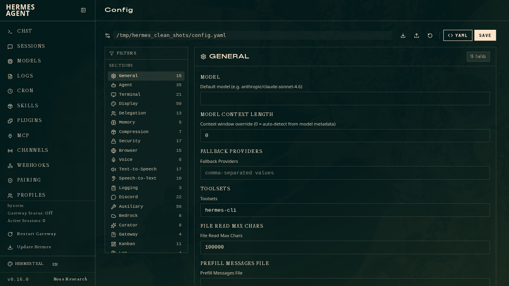
- model — default model, provider, base URL, reasoning settings
- terminal — backend (local/docker/ssh/modal), timeout, shell preferences
- display — skin, tool progress, resume display, spinner settings
- agent — max iterations, gateway timeout, service tier
- delegation — subagent limits, reasoning effort
- memory — provider selection, context injection settings
- approvals — dangerous command approval mode (smart/manual/off)
- And more — every section of config.yaml has corresponding form fields
Fields with known valid values (terminal backend, skin, approval mode, etc.) render as dropdowns. Booleans render as toggles. Everything else is a text input.
Actions:
- Save — writes changes to
config.yamlimmediately - Reset to defaults — reverts all fields to their default values (doesn't save until you click Save)
- Export — downloads the current config as JSON
- Import — uploads a JSON config file to replace the current values
Tip
Config changes take effect on the next agent session or gateway restart. The web dashboard edits the same config.yaml file that hermes config set and the gateway read from.
API Keys
Manage the .env file where API keys and credentials are stored. Keys are grouped by category:
- LLM Providers — OpenRouter, Anthropic, OpenAI, DeepSeek, etc.
- Tool API Keys — Browserbase, Firecrawl, Tavily, Keenable, ElevenLabs, etc.
- Messaging Platforms — Telegram, Discord, Slack bot tokens, etc.
- Agent Settings — non-secret env vars like
API_SERVER_ENABLED
Each key shows: - Whether it's currently set (with a redacted preview of the value) - A description of what it's for - A link to the provider's signup/key page - An input field to set or update the value - A delete button to remove it
Advanced/rarely-used keys are hidden by default behind a toggle.
Sessions
Browse and inspect all agent sessions. Each row shows the session title, source platform icon (CLI, Telegram, Discord, Slack, cron), model name, message count, tool call count, and how long ago it was active. Live sessions are marked with a pulsing badge.
- Filter — Chats / Automation / All tabs scope the list: Chats (the default) shows human conversations and hides automation noise (cron, tool, API, ACP sessions); Automation shows only those; All shows everything. An exact-source dropdown narrows further to a single channel (e.g. only Telegram). Search respects the active filter.
- Search — full-text search across all message content using FTS5. Results show highlighted snippets and auto-scroll to the first matching message when expanded.
- Stats — a summary bar shows total sessions, how many are active in the store, archived count, total messages, and a per-source breakdown.
- Expand — click a session to load its full message history. Messages are color-coded by role (user, assistant, system, tool) and rendered as Markdown with syntax highlighting.
- Tool calls — assistant messages with tool calls show collapsible blocks with the function name and JSON arguments.
- Rename — set or clear a session's title inline (pencil icon).
- Export — download a session (metadata + full message history) as JSON (download icon).
- Prune — the header "Prune old sessions" button deletes ended sessions older than N days.
- Delete — remove a session and its message history with the trash icon.
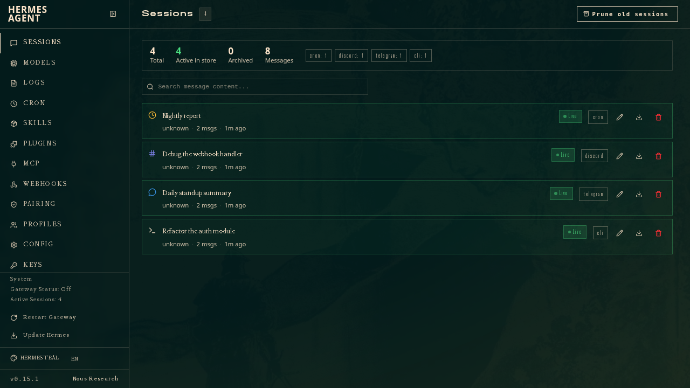
Logs
View agent, gateway, and error log files with filtering and live tailing.
- File — switch between
agent,errors, andgatewaylog files - Level — filter by log level: ALL, DEBUG, INFO, WARNING, or ERROR
- Component — filter by source component: all, gateway, agent, tools, cli, or cron
- Lines — choose how many lines to display (50, 100, 200, or 500)
- Auto-refresh — toggle live tailing that polls for new log lines every 5 seconds
- Color-coded — log lines are colored by severity (red for errors, yellow for warnings, dim for debug)
Analytics
Usage and cost analytics computed from session history. Select a time period (7, 30, or 90 days) to see:
- Summary cards — total tokens (input/output), cache hit percentage, total estimated or actual cost, and total session count with daily average
- Daily token chart — stacked bar chart showing input and output token usage per day, with hover tooltips showing breakdowns and cost
- Daily breakdown table — date, session count, input tokens, output tokens, cache hit rate, and cost for each day
- Per-model breakdown — table showing each model used, its session count, token usage, and estimated cost
Cron
Create and manage scheduled cron jobs that run agent prompts on a recurring schedule.
- Create — fill in a name (optional), prompt, cron expression (e.g.
0 9 * * *), and delivery target (local, Telegram, Discord, Slack, or email) - Job list — each job shows its name, prompt preview, schedule expression, state badge (enabled/paused/error), delivery target, last run time, and next run time
- Pause / Resume — toggle a job between active and paused states
- Edit — open a pre-filled modal to change a job's prompt, schedule, name, or delivery target
- Trigger now — immediately execute a job outside its normal schedule
- Delete — permanently remove a cron job
Profiles
Create and manage profiles — isolated Hermes instances with their own config, skills, and sessions.
- Profile cards — each shows its model/provider, skill count, gateway state, description, and badges (active, default, alias)
- Create — name + optional clone-from-default / clone-everything / no-bundled-skills, description, and model; the dedicated Profile Builder page (
/profiles/new) offers the full flow (model, MCPs, skills) - Manage skills & tools — jumps to the Skills page scoped to that profile (sets the sidebar profile switcher)
- Set as active — flips the sticky default that future CLI/gateway runs pick up (same as
hermes profile use). This does not change what the dashboard manages — that's the profile switcher's job - Edit model / description / SOUL — inline editors writing into that profile
- Rename / Delete — named profiles only
Skills
Browse, search, and toggle installed skills and toolsets, and install new ones from the hub. Skills are loaded from ~/.hermes/skills/ and grouped by category.
- Search — filter installed skills and toolsets by name, description, or category
- Category filter — click category pills to narrow the list (e.g. MLOps, MCP, Red Teaming, AI)
- Toggle — enable or disable individual skills with a switch. Changes take effect on the next session.
- Toolsets — a separate view shows built-in toolsets (file operations, web browsing, etc.) with their active/inactive status, setup requirements, and list of included tools
- Browse hub — a third view searches the skill hub across all sources (the same as
hermes skills search), installs any result by identifier with a live install log, and offers an "Update all" button to refresh installed skills.
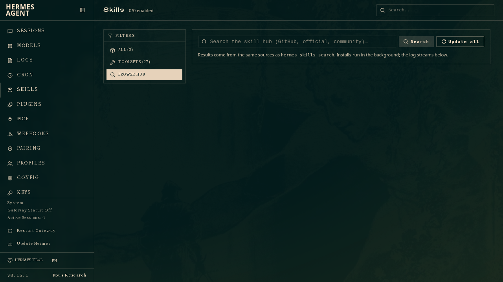
MCP
Manage MCP servers without the CLI. The same mcp_servers
block in config.yaml that hermes mcp reads from.
Your MCP servers:
- Add — register an HTTP/SSE server (URL) or a stdio server (command + args), with optional
KEY=VALUEenvironment variables for stdio servers - Enable / disable — toggle a server on or off without deleting it. A disabled server stays in config so you can re-enable it later. Takes effect on the next gateway restart.
- Test — connect to a server, list its tools, and disconnect — verifies the connection before the agent depends on it
- Remove — delete a server from the config
- Secret-shaped env values are redacted in the list view
Catalog: browse the Nous-approved MCP servers (the bundled optional-mcps/
catalog) and install any of them with one click. Entries that need API keys
prompt for them inline; the values go to .env. This is the same catalog
hermes mcp catalog / hermes mcp install use.
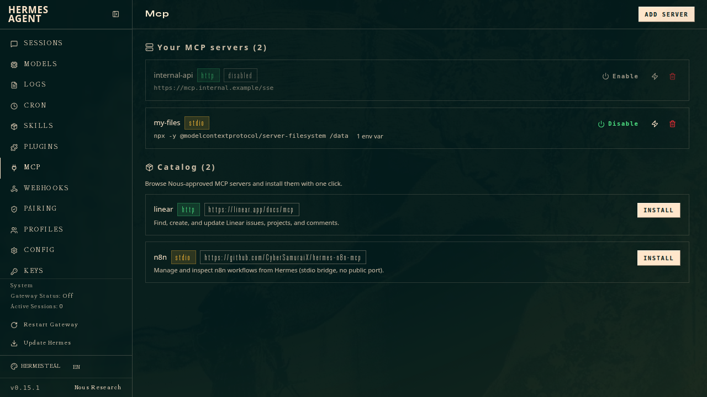
Webhooks
Manage dynamic webhook subscriptions. The webhook platform must be enabled in messaging settings first; the page shows a hint when it isn't.
- Create — name, description, event filter, delivery target, optional direct-delivery mode, and an agent prompt. On creation the page surfaces the route URL and the one-time HMAC secret to copy.
- Enable / disable — toggle a subscription on or off. Disabled routes stay in the subscriptions file but the gateway rejects their incoming events (403). The gateway hot-reloads the file, so the change takes effect on the next event — no restart needed.
- List — each subscription shows its URL, events, and delivery target
- Delete — remove a subscription
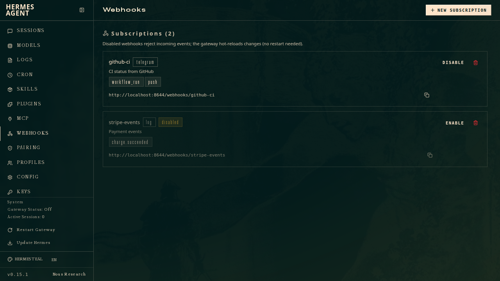
Pairing
Approve and revoke messaging users without the CLI — how a remote admin
onboards Telegram/Discord/etc. users to a paired gateway. Full parity with
hermes pairing.
- Pending requests — each shows platform, code, user, and age, with an Approve button
- Approved users — each shows platform and user, with a Revoke button
- Clear pending — drop all outstanding pairing codes
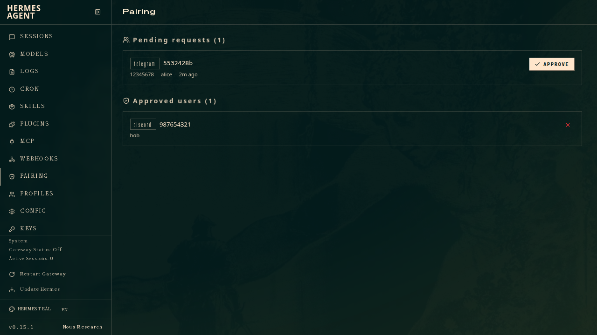
Channels
Connect Hermes to any messaging platform from the browser — full parity with
hermes setup gateway. The page lists every supported channel (Telegram,
Discord, Slack, Matrix, Mattermost, WhatsApp, Signal, BlueBubbles/iMessage,
Email, SMS/Twilio, DingTalk, Feishu/Lark, WeCom, WeChat, QQ Bot, Yuanbao, plus
the API server and webhook endpoints) with its live connection status.
- Configure — open a per-platform form with exactly the fields that channel needs (bot token, app token, server URL, allowlist, etc.). Secrets render as password inputs and are stored redacted; leaving a field blank keeps the existing value. Required fields are marked and validated. A "Setup guide" link points to the platform's credential docs.
- Enable / disable — toggle a channel on or off. The credential stays on disk; only the active state changes.
- Test — check whether the channel is configured, enabled, and reporting a live connection from the gateway.
- Restart gateway — credentials are written to
~/.hermes/.envand the enabled flag toconfig.yaml; the gateway connects each enabled channel on its next restart, which you can trigger right from the page. On a system-scope install (hermes gateway install --system) the dashboard runs the restart undersudo -n, so the dashboard user needs passwordless sudo; without it the request fails immediately instead of reporting a restart that the CLI then refuses.
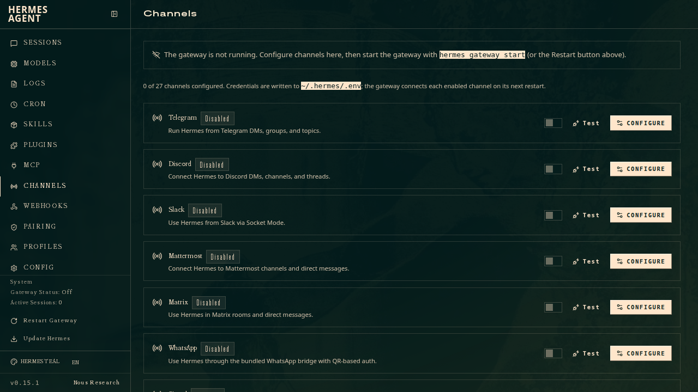
System
A consolidated administration panel for installation-wide operations:
- Host — live system stats: OS / kernel, architecture, hostname, Python and Hermes versions, CPU core count + utilization, memory, disk usage of the Hermes home, uptime, and load average. (CPU/memory/disk come from
psutilwhen installed; identity fields are always shown.) The Hermes version shows an update-status badge (up to date / N commits behind) and a Check for updates button. When an update is available on a git install, an Update now button opens a confirmation dialog — showing how many commits you'll pull — before runninghermes updatein the background. On Docker/Nix installs the dashboard can't apply the update in place, so it shows the correct out-of-band command instead. - Nous Portal — login status, the active inference provider, and the Tool Gateway routing table (which tools run via the Portal vs. locally), with a link to manage your subscription. Read-only mirror of
hermes portal. - Skill curator — the background skill-maintenance status (active / paused, interval, last run) with pause/resume and a run-now button. Mirrors
hermes curator. - Gateway — start, stop, and restart the messaging gateway, with live status (running/stopped, PID, state)
- Memory — pick the external memory provider (or built-in only), and reset the built-in
MEMORY.md/USER.mdstores - Credential pool — add and remove the rotating API keys the agent round-robins through (per provider). Keys are redacted in the list; the raw value only ever reaches the agent.
- Operations — run
doctor, a security audit, create a backup, restore from a backup archive, update skills, show the system-prompt size breakdown, generate a support dump, or migrate config for retired settings. Each spawns a background action whose live log streams into the page. - Checkpoints — see the
/rollbackshadow store size and prune it - Shell hooks — list configured hooks with their consent + executable status, create a hook (event, command, matcher, timeout, with an opt-in consent grant), and remove one. Hooks run arbitrary commands, so the create form carries a security warning and the hook only fires after consent is granted.
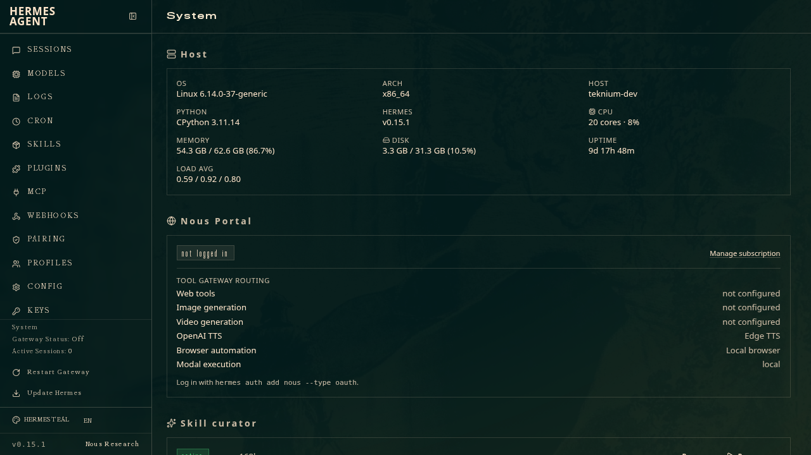
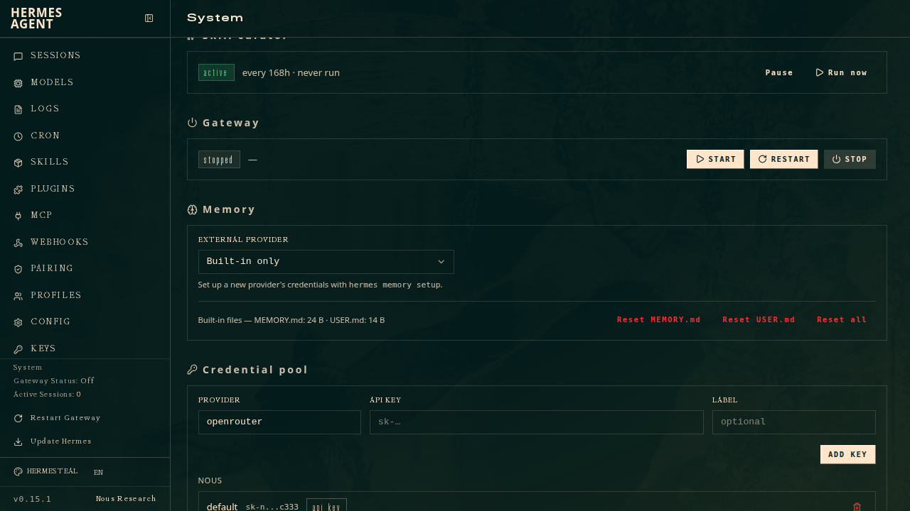
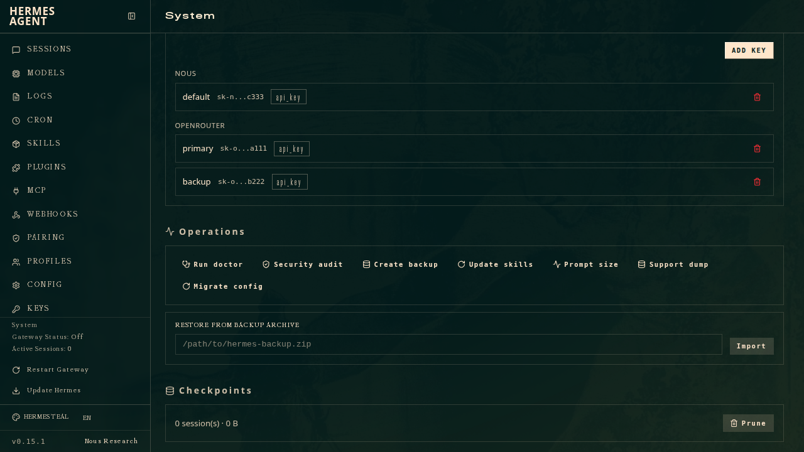
Creating a shell hook (note the consent checkbox and the run-arbitrary-commands warning):
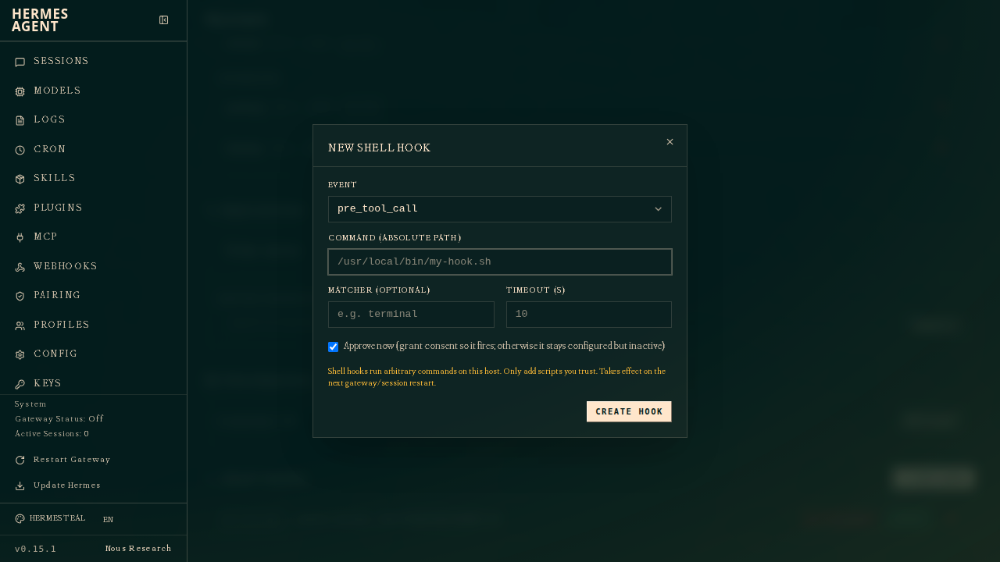
Security
The web dashboard reads and writes your .env file, which contains API keys and secrets. It binds to 127.0.0.1 by default — only accessible from your local machine, with no login required. Binding to any non-loopback address (including 0.0.0.0) engages the auth gate: the server refuses to start until an auth provider (username/password or OAuth) is configured.
/reload Slash Command
The dashboard PR also adds a /reload slash command to the interactive CLI. After changing API keys via the web dashboard (or by editing .env directly), use /reload in an active CLI session to pick up the changes without restarting:
You → /reload
Reloaded .env (3 var(s) updated)
This re-reads ~/.hermes/.env into the running process's environment. Useful when you've added a new provider key via the dashboard and want to use it immediately.
REST API
The web dashboard exposes a REST API that the frontend consumes. You can also call these endpoints directly for automation:
Profile-scoped endpoints
The management endpoint families — /api/config, /api/env, /api/skills,
/api/tools/toolsets, /api/mcp, and /api/model/{info,options,auxiliary,set} —
accept an optional ?profile=<name> query parameter (or "profile" in the
JSON body for writes) that scopes the read/write to that profile's
HERMES_HOME. Omitted = the dashboard's own profile. Unknown profile names
return 404. The /api/pty WebSocket accepts the same parameter to spawn
a chat under the selected profile.
GET /api/status
Returns agent version, gateway status, platform states, and active session count.
The response also carries two advisory resource blocks (they never affect the
components/overall health verdict):
memory— distilled from the gateway's 30-second heartbeat and the lifecycle ledger. Fields:pressure(ok/elevated/critical/unknown),gateway_rss_mb,system_total_mb,system_available_mb,swap_used_mb,sampled_at,boot_id,last_boot_unclean,last_boot_suspected_oom. Pressure iselevatedbelow 128 MiB (or 15%) of available system memory andcriticalbelow 64 MiB (or 5%) — the same levels at which a subsequent unclean exit would be flagged as a suspected OOM kill. Heartbeats older than 150 seconds (or future-dated) keep their numbers but degradepressuretounknown, so a dead gateway's last sample can't masquerade as a live reading.disk— a liveshutil.disk_usage()sample of the volume holding~/.hermes. Fields:pressure,free_mb,total_mb,used_percent,sampled_at. Pressure iselevatedbelow 512 MB free (or ≥85% used with under 4 GB headroom) andcriticalbelow 256 MB free (or ≥95% used with under 1 GB headroom).
Both collectors are fail-safe: any sampling error degrades the block to
{"pressure": "unknown"} instead of failing the status endpoint. The numbers
are coarse (whole MB, whole-percent) since /api/status is public.
GET /api/sessions
Returns the 20 most recent sessions with metadata (model, token counts, timestamps, preview).
GET /api/config
Returns the current config.yaml contents as JSON.
GET /api/config/defaults
Returns the default configuration values.
GET /api/config/schema
Returns a schema describing every config field — type, description, category, and select options where applicable. The frontend uses this to render the correct input widget for each field.
PUT /api/config
Saves a new configuration. Body: {"config": {...}}.
GET /api/env
Returns all known environment variables with their set/unset status, redacted values, descriptions, and categories.
PUT /api/env
Sets an environment variable. Body: {"key": "VAR_NAME", "value": "secret"}.
DELETE /api/env
Removes an environment variable. Body: {"key": "VAR_NAME"}.
GET /api/sessions/{session_id}
Returns metadata for a single session.
GET /api/sessions/{session_id}/messages
Returns a bounded page of message history, including tool calls and timestamps. By default it returns the latest 500 messages in chronological order. Use limit (maximum 500), offset, and order=oldest|latest for explicit pagination.
GET /api/sessions/search
Full-text search across message content. Query parameter: q. Returns matching session IDs with highlighted snippets.
DELETE /api/sessions/{session_id}
Deletes a session and its message history.
GET /api/logs
Returns log lines. Query parameters: file (agent/errors/gateway), lines (count), level, component.
GET /api/analytics/usage
Returns token usage, cost, and session analytics. Query parameter: days (default 30). Response includes daily breakdowns and per-model aggregates.
GET /api/cron/jobs
Returns all configured cron jobs with their state, schedule, and run history.
POST /api/cron/jobs
Creates a new cron job. Body: {"prompt": "...", "schedule": "0 9 * * *", "name": "...", "deliver": "local"}.
POST /api/cron/jobs/{job_id}/pause
Pauses a cron job.
POST /api/cron/jobs/{job_id}/resume
Resumes a paused cron job.
POST /api/cron/jobs/{job_id}/trigger
Immediately triggers a cron job outside its schedule.
DELETE /api/cron/jobs/{job_id}
Deletes a cron job.
GET /api/skills
Returns all skills with their name, description, category, and enabled status.
PUT /api/skills/toggle
Enables or disables a skill. Body: {"name": "skill-name", "enabled": true}.
GET /api/tools/toolsets
Returns all toolsets with their label, description, tools list, and active/configured status.
Admin endpoints
These power the MCP, Channels, Webhooks, Pairing, and System pages. All sit behind the
same auth gate as the rest of /api/.
| Method & path | Purpose |
|---|---|
GET /api/mcp/servers |
List configured MCP servers (env values redacted) |
POST /api/mcp/servers |
Add a server. Body: {name, url?, command?, args?, env?, auth?} |
POST /api/mcp/servers/{name}/test |
Connect, list tools, disconnect |
PUT /api/mcp/servers/{name}/enabled |
Enable / disable a server |
DELETE /api/mcp/servers/{name} |
Remove a server |
GET /api/mcp/catalog |
Browse the Nous-approved MCP catalog |
POST /api/mcp/catalog/install |
Install a catalog entry (with required env) |
GET /api/messaging/platforms |
List every messaging channel with status + per-platform setup fields |
PUT /api/messaging/platforms/{id} |
Configure a channel. Body: {enabled?, env?, clear_env?} (env writes to .env, enabled to config.yaml) |
POST /api/messaging/platforms/{id}/test |
Report whether a channel is configured, enabled, and connected |
GET /api/pairing |
List pending + approved messaging users |
POST /api/pairing/approve |
Approve a code. Body: {platform, code} |
POST /api/pairing/revoke |
Revoke a user. Body: {platform, user_id} |
POST /api/pairing/clear-pending |
Drop all pending codes |
GET /api/webhooks |
List subscriptions + platform-enabled status |
POST /api/webhooks |
Create a subscription (returns one-time secret) |
DELETE /api/webhooks/{name} |
Remove a subscription |
GET /api/credentials/pool |
List pooled rotation keys (redacted) |
POST /api/credentials/pool |
Add a key. Body: {provider, api_key, label?} |
DELETE /api/credentials/pool/{provider}/{index} |
Remove a key (1-based index) |
GET /api/memory |
Active provider + available providers + built-in file sizes |
PUT /api/memory/provider |
Select a provider (empty = built-in only) |
POST /api/memory/reset |
Reset built-in memory. Body: {target: all\|memory\|user} |
POST /api/gateway/start · /stop · /restart |
Gateway lifecycle (backgrounded) |
POST /api/ops/doctor · /security-audit · /backup · /import |
Diagnostics & maintenance (backgrounded; tail via /api/actions/{name}/status) |
GET /api/ops/hooks |
Configured shell hooks + allowlist status |
GET /api/ops/checkpoints · POST .../prune |
Inspect / prune the /rollback store |
POST /api/ops/hooks · DELETE /api/ops/hooks |
Create / remove a shell hook (consent-gated) |
GET /api/system/stats |
Host stats — OS, CPU, memory, disk, uptime |
GET /api/hermes/update/check |
Report update availability (commits behind, install method) without applying. For git installs that are behind, also returns a commits list (sha, summary, author, at) of what's changed. ?force=1 busts the 24h cache (the check goes through the GitHub API, never git fetch) |
GET /api/curator · PUT .../paused · POST .../run |
Skill-curator status + pause/resume + run |
GET /api/portal |
Nous Portal auth + Tool Gateway routing (read-only) |
POST /api/ops/prompt-size · /dump · /config-migrate |
Diagnostics (backgrounded) |
PUT /api/webhooks/{name}/enabled |
Enable / disable a webhook route |
POST /api/skills/hub/install · /uninstall · /update |
Skills hub actions (backgrounded) |
GET /api/skills/hub/search |
Search the skill hub across all sources |
GET /api/sessions/stats |
Session-store statistics |
PATCH /api/sessions/{id} |
Rename / archive a session |
GET /api/sessions/{id}/export |
Export a session (metadata + messages) as JSON |
POST /api/sessions/prune |
Delete ended sessions older than N days |
PUT /api/cron/jobs/{id} |
Edit a cron job's prompt / schedule / name / deliver |
Authentication (gated mode)
When the dashboard is bound to a public or non-loopback address — anything other than 127.0.0.1 / localhost — Hermes Agent engages an auth gate. Every request must carry a verified session cookie or it's bounced to the login page. Three providers ship in the box:
- Username/password — the simplest way to put auth on a self-hosted / on-prem / homelab dashboard. No external identity provider. Use it only on a trusted network or behind a VPN — not for public-internet exposure.
- OAuth (Nous Portal) — for hosted deployments and any dashboard reachable over the public internet, and the recommended path for a remote Hermes Desktop connection. Every login is verified against your Nous account, so this is the provider suitable for internet-facing use.
- Self-hosted OIDC — for bringing your own identity provider via standard OpenID Connect (Keycloak, Auth0, Okta, Google, GitHub via an OIDC bridge, etc.). No Nous Portal involved; suitable for public-internet exposure when fronted by a conformant OIDC server.
Operator-owned dashboards bound to loopback are unaffected — no auth, no login page.
When the gate engages
| Flags | Auth gate | Use case |
|---|---|---|
hermes dashboard (default — binds to 127.0.0.1) |
OFF | Local development |
hermes dashboard --host 0.0.0.0 |
ON | Remote / production — protect with the username/password provider or OAuth |
The gate is on if and only if the bind host is not 127.0.0.1, ::1, or localhost. Binding to 0.0.0.0 (or any RFC1918 / LAN address) engages the gate. The legacy --insecure flag no longer disables it — it's accepted for backward compatibility but ignored, with a warning.
`--insecure` is a no-op — it does not disable auth
Since the June 2026 hardening, --insecure no longer bypasses dashboard authentication: a non-loopback bind always requires an auth provider (the username/password provider or OAuth). If you want an auth-free dashboard, bind to 127.0.0.1 and reach it over an SSH tunnel or Tailscale.
Fail-closed semantics
If the gate would engage but no DashboardAuthProvider is registered (no Nous plugin, no custom plugin), hermes dashboard refuses to bind with an explicit error message. There is no "default-deny but accept everything" fallback — a misconfigured gated dashboard never starts.
When you run hermes dashboard --host 0.0.0.0 interactively (a real terminal) and no provider is configured yet, Hermes doesn't just fail — it offers to set one up on the spot: pick username & password (writes dashboard.basic_auth to config.yaml and you're running in seconds) or OAuth (points you at hermes dashboard register). Non-interactive callers — Docker/s6, CI, piped runs — skip the prompt and hit the fail-closed error above, so an unattended deploy still never starts without auth.
Default provider: Nous Research
The bundled plugins/dashboard_auth/nous plugin is always installed and auto-loaded. It auto-registers a DashboardAuthProvider named nous when a client ID is configured.
Because every login is verified against Nous Portal and protected by your Nous account, the Nous provider is the one suitable for exposing a dashboard to the public internet.
Registering a dashboard
To use the Nous provider you need an OAuth client ID (shape agent:{id}). There are two ways to get one:
- CLI —
hermes dashboard register. Run it on the host where the dashboard lives. It resolves your existing Nous login (runhermes setupfirst if you're not logged in), registers a self-hosted OAuth client with the Portal, and writesHERMES_DASHBOARD_OAUTH_CLIENT_IDinto~/.hermes/.envfor you. Optional flags:--name(a human-readable label, otherwise auto-generated) and--redirect-uri(a public HTTPS callback URL for an internet-facing host).
bash
hermes dashboard register
# ✓ Registered dashboard "swift_falcon"
# …writes HERMES_DASHBOARD_OAUTH_CLIENT_ID to ~/.hermes/.env
- GUI — the Local Dashboards page. Open
/local-dashboardsin the Nous Portal to register, name, manage, and revoke self-hosted dashboards from the browser. Copy the resultingagent:{id}client ID intoHERMES_DASHBOARD_OAUTH_CLIENT_ID(env) ordashboard.oauth.client_id(config.yaml). This is also where you revoke a dashboard registered via the CLI.
Configuration
The plugin reads from two surfaces, with the environment variable winning when set non-empty:
config.yaml — the canonical surface:
dashboard:
oauth:
client_id: agent:01HXYZ… # required to engage the gate
Environment variables — operator overrides:
| Env var | Overrides | Format | Provisioned by |
|---|---|---|---|
HERMES_DASHBOARD_OAUTH_CLIENT_ID |
dashboard.oauth.client_id |
agent:{instance_id} |
hermes dashboard register |
Per the Hermes Agent convention (~/.hermes/.env is for API keys / secrets only), config.yaml is the recommended place to set these values for local dev, on-prem, and any deployment you control directly. The environment-variable path exists so a hosting platform's secret injection can push per-deploy client_ids without anyone having to edit config.yaml inside the image — that's its primary purpose.
Empty environment values are treated as unset, so a provisioned-but-not-populated platform secret can't accidentally shadow a valid config.yaml entry.
If neither source provides a client_id, the plugin reports the specific reason and the dashboard's fail-closed bind error tells you exactly what to fix:
Refusing to bind dashboard to 0.0.0.0 — the auth gate engages on
non-loopback binds, but no auth providers are registered.
Bundled providers reported these issues:
• nous: HERMES_DASHBOARD_OAUTH_CLIENT_ID is not set (and
dashboard.oauth.client_id in config.yaml is empty). …
Configure an auth provider before exposing the dashboard:
• Password: set dashboard.basic_auth.username + password_hash in config.yaml
• OAuth: run `hermes dashboard register` (Nous Portal) or install a
DashboardAuthProvider plugin.
There is no unauthenticated public-bind option — to keep it local, bind
127.0.0.1 and tunnel in (SSH / Tailscale).
Worked example: Nous Research
From a logged-in Hermes install to a Nous-gated dashboard in three steps.
1. Log in and register the dashboard. hermes dashboard register uses your existing Nous login to provision an OAuth client and writes HERMES_DASHBOARD_OAUTH_CLIENT_ID into ~/.hermes/.env for you:
hermes setup # if you're not already logged into Nous Portal
hermes dashboard register
# ✓ Registered dashboard "swift_falcon"
# …writes HERMES_DASHBOARD_OAUTH_CLIENT_ID to ~/.hermes/.env
2. Run the dashboard on a reachable address. A non-loopback bind engages the OAuth gate, and the client_id just written activates the nous provider:
hermes dashboard --host 0.0.0.0 --port 9119 --no-open
3. Log in. Open http://<host>:9119/, you'll be bounced to /login. Click Sign in with Nous Research → authenticate at the Portal → land back on the authenticated dashboard. Verify the gate from any machine:
curl -s http://<host>:9119/api/status | jq '.auth_required, .auth_providers'
# true
# ["nous"]
GET /api/auth/me then returns the verified session (provider: nous). For an internet-facing host, register with --redirect-uri https://hermes.example.com/auth/callback and set HERMES_DASHBOARD_PUBLIC_URL so the OAuth callback resolves to your public URL (see Public URL override).
Username/password provider (no OAuth IDP)
If you don't want to wire up an OAuth identity provider — a self-hosted "just put a password on my dashboard" deployment — the bundled plugins/dashboard_auth/basic plugin registers a DashboardAuthProvider named basic that authenticates with a username and password instead of an OAuth redirect.
It plugs into the same gate as the OAuth provider: the gate engages on a non-loopback bind, the login page renders a credential form for this provider (instead of a "Log in with X" button), and everything downstream of login — session cookies, transparent refresh, WS tickets, logout, the audit log — is identical to the OAuth path. Sessions are stateless HMAC-signed tokens the provider mints itself, so there's no database and no external IDP. Password hashing uses stdlib scrypt (no third-party dependency).
Use this on trusted networks only — not the public internet
The username/password provider is intended for self-hosted / on-prem / homelab dashboards on a trusted network, or reachable only over a VPN. It protects a single shared credential with no external identity provider, MFA, or per-user accounts behind it, so it is not suitable for exposing a dashboard directly to the public internet. For an internet-facing dashboard, use the Nous Research provider (or your own self-hosted OIDC / custom OAuth provider) instead.
Configuration
Like the Nous provider, it reads from config.yaml (canonical) with environment variables winning when set non-empty. It activates only when username plus either password_hash (preferred) or password are configured — otherwise it's a no-op, so OAuth users and loopback operators are unaffected.
config.yaml:
dashboard:
basic_auth:
username: admin
# Preferred — no plaintext at rest. Compute with:
# python -c "from plugins.dashboard_auth.basic import hash_password; print(hash_password('PW'))"
password_hash: "scrypt$16384$8$1$…$…"
# ...or a plaintext password (hashed in-memory at load; less safe at rest):
# password: "s3cret"
secret: "<32+ random bytes, base64 or hex>" # token-signing key
session_ttl_seconds: 43200 # optional; access-token lifetime (default 12h)
Environment overrides:
| Env var | Overrides | Notes |
|---|---|---|
HERMES_DASHBOARD_BASIC_AUTH_USERNAME |
dashboard.basic_auth.username |
required to activate |
HERMES_DASHBOARD_BASIC_AUTH_PASSWORD_HASH |
dashboard.basic_auth.password_hash |
preferred (no plaintext at rest) |
HERMES_DASHBOARD_BASIC_AUTH_PASSWORD |
dashboard.basic_auth.password |
plaintext; wins over a config password_hash so you can rotate via env |
HERMES_DASHBOARD_BASIC_AUTH_SECRET |
dashboard.basic_auth.secret |
token-signing key |
HERMES_DASHBOARD_BASIC_AUTH_TTL_SECONDS |
dashboard.basic_auth.session_ttl_seconds |
access-token lifetime |
Set an explicit `secret` for stable sessions
When secret is empty, a random per-process signing key is generated. That's fine for a single process, but it means every session is invalidated on restart and sessions don't span multiple workers. Set an explicit secret for restart-surviving / multi-worker deployments.
The /auth/password-login endpoint is rate-limited per client IP (default 10 attempts/minute → HTTP 429) and returns a single generic 401 Invalid credentials for both unknown users and wrong passwords, so it can't be used as a username-enumeration oracle.
Worked example: username/password
From nothing to a password-gated dashboard on a trusted network in three steps.
1. Set credentials in ~/.hermes/.env. Hash the password so no plaintext sits at rest, and set a stable signing secret so sessions survive restarts:
# Compute a scrypt hash of your chosen password:
HASH=$(python -c "from plugins.dashboard_auth.basic import hash_password; print(hash_password('choose-a-strong-password'))")
cat >> ~/.hermes/.env <<EOF
HERMES_DASHBOARD_BASIC_AUTH_USERNAME=admin
HERMES_DASHBOARD_BASIC_AUTH_PASSWORD_HASH=$HASH
HERMES_DASHBOARD_BASIC_AUTH_SECRET=$(openssl rand -base64 32)
EOF
chmod 600 ~/.hermes/.env
2. Run the dashboard on a reachable address. A non-loopback bind engages the gate, and the username + hash activate the basic provider:
hermes dashboard --host 0.0.0.0 --port 9119 --no-open
3. Log in. Open http://<host>:9119/, you'll be bounced to /login — a credential form (not a "Sign in with X" button). Enter admin / your password → land on the authenticated dashboard. Verify the gate from any machine:
curl -s http://<host>:9119/api/status | jq '.auth_required, .auth_providers'
# true
# ["basic"]
GET /api/auth/me then returns the verified session (provider: basic). Keep this behind a VPN — see the warning above; for a public host use the Nous Research or self-hosted OIDC provider instead.
Writing your own password provider
basic is just one implementation of an extension point. Any plugin can register a password provider: set supports_password = True on your DashboardAuthProvider subclass and implement complete_password_login(*, username, password) -> Session (raise InvalidCredentialsError on rejection, ProviderError if your backing store is down). The OAuth start_login / complete_login methods can be left as NotImplementedError stubs for a pure-password provider. This is the path for LDAP-bind, a credentials database, or any other non-redirect auth scheme — the framework handles the form, the route, the cookies, and refresh for you.
Self-hosted OIDC provider
If you run your own identity provider, the bundled plugins/dashboard_auth/self_hosted plugin authenticates the dashboard against it using standard OpenID Connect — no per-IDP code, no Nous Portal involved. It's verified against and works with any conformant OIDC server:
Authentik · Keycloak · Zitadel · Authelia · Auth0 · Okta · Google · …
Like the Nous provider, it auto-loads and only registers itself once it's configured, so it's a no-op for loopback dashboards.
Configuration
Configure an issuer and a client_id (a public PKCE client — no client secret). The plugin fetches the IDP's authorization_endpoint, token_endpoint, and jwks_uri from {issuer}/.well-known/openid-configuration, so you never hardcode endpoint URLs.
config.yaml — the canonical surface:
dashboard:
oauth:
provider: self-hosted
self_hosted:
issuer: https://auth.example.com/application/o/hermes/ # required
client_id: hermes-dashboard # required
scopes: "openid profile email" # optional (this is the default)
Environment variables — operator overrides (env wins over config.yaml when set non-empty; an empty value is treated as unset):
| Env var | Overrides | Notes |
|---|---|---|
HERMES_DASHBOARD_OIDC_ISSUER |
dashboard.oauth.self_hosted.issuer |
OIDC issuer URL — required |
HERMES_DASHBOARD_OIDC_CLIENT_ID |
dashboard.oauth.self_hosted.client_id |
Public client id — required |
HERMES_DASHBOARD_OIDC_SCOPES |
dashboard.oauth.self_hosted.scopes |
Defaults to openid profile email |
In your IDP, register a public application/client with the authorization-code + PKCE (S256) grant and add the dashboard's callback as an allowed redirect URI. The callback is <dashboard public URL>/auth/callback (see Public URL override for how the dashboard derives its public URL behind a proxy).
What it verifies
The provider verifies the OpenID Connect ID token (RS256/ES256) against the discovered jwks_uri, with the iss and aud claims pinned to your configured issuer and client_id. Standard OIDC claims map onto the dashboard session:
| Session field | Claim(s) |
|---|---|
user_id |
sub (required) |
email |
email |
display_name |
name → preferred_username → nickname → email |
org_id |
org_id / organization, else joined groups |
The ID token is what establishes identity — the access token is treated as opaque (the OIDC spec does not require it to be a JWT). Endpoint URLs are required to be HTTPS (loopback http:// is allowed for local-dev IDPs), and the discovery document's advertised issuer must match your configured one (a trailing-slash difference is tolerated). Refresh tokens, when the IDP issues them, are used for silent re-auth via the standard refresh_token grant; logout calls the IDP's RFC 7009 revocation_endpoint when advertised.
Confidential clients (those with a
client_secret) are not supported yet — configure a public + PKCE client, which is the typical choice for a browser-facing dashboard.
Worked example: Keycloak
Keycloak is one of the easiest self-hosted OIDC servers to stand up for a local test — it runs as a single container in dev mode (in-memory DB) and exposes textbook OIDC discovery. This walkthrough gets you from nothing to a working dashboard login in a few minutes.
1. Run Keycloak with a pre-configured realm. Save this realm export as realm-hermes.json — it defines a hermes realm, a public PKCE client (hermes-dashboard), and a test user, all imported on boot so there's nothing to click in the admin UI:
{
"realm": "hermes",
"enabled": true,
"clients": [
{
"clientId": "hermes-dashboard",
"name": "Hermes Agent Dashboard",
"enabled": true,
"publicClient": true,
"standardFlowEnabled": true,
"protocol": "openid-connect",
"redirectUris": ["http://localhost:9119/auth/callback"],
"webOrigins": ["http://localhost:9119"],
"attributes": { "pkce.code.challenge.method": "S256" }
}
],
"users": [
{
"username": "testuser",
"enabled": true,
"emailVerified": true,
"email": "testuser@example.com",
"firstName": "Test",
"lastName": "User",
"credentials": [
{ "type": "password", "value": "testpassword", "temporary": false }
]
}
]
}
Start it (Keycloak 26+), mounting that file into the import directory:
docker run --rm -p 8080:8080 \
-e KC_BOOTSTRAP_ADMIN_USERNAME=admin \
-e KC_BOOTSTRAP_ADMIN_PASSWORD=admin \
-v "$PWD/realm-hermes.json:/opt/keycloak/data/import/realm-hermes.json:ro" \
quay.io/keycloak/keycloak:26.0 \
start-dev --import-realm
Once it's up, the realm advertises standard OIDC discovery at
http://localhost:8080/realms/hermes/.well-known/openid-configuration (issuer
http://localhost:8080/realms/hermes). The admin console is at
http://localhost:8080/ (admin / admin).
2. Point the dashboard at it. The self-hosted plugin permits a loopback http:// issuer (HTTPS is required for any non-loopback issuer), so the local Keycloak works as-is:
export HERMES_DASHBOARD_OIDC_ISSUER="http://localhost:8080/realms/hermes"
export HERMES_DASHBOARD_OIDC_CLIENT_ID="hermes-dashboard"
export HERMES_DASHBOARD_PUBLIC_URL="http://localhost:9119"
hermes dashboard --host 0.0.0.0 --port 9119 --no-open
HERMES_DASHBOARD_PUBLIC_URL tells the dashboard its OAuth callback is
http://localhost:9119/auth/callback — the redirect URI the realm registered
above. Binding to 0.0.0.0 (a non-loopback bind) is what
engages the OAuth gate.
3. Log in. Open http://localhost:9119/, you'll be bounced to /login. Click Sign in with Self-Hosted OIDC → authenticate at Keycloak as testuser / testpassword → land back on the authenticated dashboard. The sidebar shows Logged in as Test User via self-hosted, and GET /api/auth/me returns the verified session (provider: self-hosted, email: testuser@example.com).
If you bind or browse on a different host/port, add that origin's
…/auth/callbackto the client's Valid redirect URIs in the Keycloak admin console (Clients → hermes-dashboard → Settings). The same pattern works for Authentik, Zitadel, Authelia, and other OIDC servers — only the issuer URL and client registration UI differ.
Public URL override
By default, the dashboard reconstructs the OAuth callback URL from the request — X-Forwarded-Host + X-Forwarded-Proto + X-Forwarded-Prefix (when uvicorn is configured with proxy_headers=True, which start_server enables under the gate). This works out of the box behind a reverse proxy that sets all three headers correctly.
For deploys behind reverse proxies that don't reliably forward those headers (manual nginx setups, on-prem ingresses, custom-domain deploys with partial proxy chains), set dashboard.public_url (or HERMES_DASHBOARD_PUBLIC_URL) to the complete public URL the dashboard is reached at:
dashboard:
public_url: "https://dashboard.example.com/hermes"
trusted_proxies:
- "172.20.0.5"
When set, the OAuth callback URL becomes <public_url>/auth/callback verbatim — X-Forwarded-Prefix is ignored on that code path because the operator has explicitly declared the public URL. This is intentional: stacking the prefix on top would double-prefix the common case where the prefix is already baked into public_url.
The hostname in public_url is also accepted as an exact HTTP Host and
WebSocket Origin value. This supports a reverse proxy that preserves the
browser-facing hostname while forwarding to a dashboard bound to
127.0.0.1. Wildcards and suffix matches are not allowed, so an attacker host
such as dashboard.example.com.evil.test remains rejected by the DNS-rebinding
guard.
Declaring a non-loopback public_url always engages the dashboard auth gate,
even when the backend binds to loopback. Configure a password or OAuth provider
first; without one, Hermes fails closed at startup. This prevents the local SPA
session token from becoming a remote authentication mechanism through the
proxy. Uvicorn also enables proxy-header processing in this mode. Loopback
proxies are trusted automatically. If the TLS terminator connects from another
container or host, add its exact IP address to dashboard.trusted_proxies, or
add a bounded CIDR for a dedicated proxy network when the address is dynamic:
dashboard:
public_url: "https://dashboard.example.com/hermes"
trusted_proxies:
- "172.20.0.0/24"
Only listed peers may supply X-Forwarded-Proto and X-Forwarded-For.
Hermes always preserves loopback trust and rejects *, 0.0.0.0/0, and
::/0. Trusting a network means every container or machine on that network
can supply forwarding metadata, so prefer an exact proxy IP or a dedicated
proxy-only network.
# Backend remains reachable only on this machine.
hermes dashboard --host 127.0.0.1 --port 9119 --no-open
Point the TLS reverse proxy at http://127.0.0.1:9119 and use
the same external origin in dashboard.public_url.
Tailscale Serve is one example of this deployment shape: it can terminate
tailnet-only HTTPS on a https://<machine>.<tailnet>.ts.net hostname while
proxying to the loopback dashboard. Use that exact HTTPS origin as
dashboard.public_url. It is still treated as a non-loopback browser-facing
origin and therefore requires a dashboard auth provider; this does not require
making the service reachable from the public internet.
Same precedence as the other dashboard settings — env wins over config.yaml:
| Surface | Override path | When to use |
|---|---|---|
dashboard.public_url in config.yaml |
HERMES_DASHBOARD_PUBLIC_URL |
Local dev / on-prem (canonical) |
HERMES_DASHBOARD_PUBLIC_URL env var |
— | Hosting-platform secrets / CI |
| (unset) | — | Default — reconstruct from X-Forwarded-* headers |
Validation rejects values without http:// / https:// scheme, without a host, or containing quote / angle / whitespace / control characters. A malformed value silently falls through to header reconstruction so the login flow keeps working rather than dispatching the user to a hostile URL.
Note:
public_urloverrides the OAuth callback URL only. TheSecurecookie flag is still controlled byrequest.url.scheme, usingX-Forwarded-Protoonly when the connecting peer is loopback or listed intrusted_proxies. Pair an HTTPSpublic_urlwith TLS termination and a bounded trusted-proxy entry when the proxy is not on loopback.
OAuth flow
The provider implements the Nous Portal OAuth contract v1 — authorization-code grant with PKCE (S256):
- User hits
/without a session cookie → gate redirects to/login. - Login page shows a "Continue with Nous Research" button →
/auth/login?provider=nous. - Server stashes PKCE state in a short-lived cookie, redirects user to
https://portal.nousresearch.com/oauth/authorize?…. - User authenticates with Portal, lands at
/auth/callback?code=…&state=…. - Server exchanges the code for an access token at
POST /api/oauth/token, verifies the JWT signature against the Portal's JWKS (/.well-known/jwks.json), and sets thehermes_session_atcookie. - User is redirected to
/(or to the original deep-link path via thenext=query parameter).
Access tokens have a 15-minute TTL. There is no refresh token in contract v1 — when the token expires, the SPA's fetch wrapper detects the 401 envelope and full-page-navigates back to /login to re-run the flow.
Cookies set
| Name | Lifetime | Notes |
|---|---|---|
hermes_session_at |
Token TTL (15 min) | HttpOnly, SameSite=Lax, Secure-when-HTTPS |
hermes_session_pkce |
10 min | HttpOnly; holds the PKCE verifier + provider hint during the round trip. SameSite=None + Secure over HTTPS (must survive the cross-site IDP redirect chain — Chromium drops SameSite=Lax cookies set on a 302 in a cross-site chain); SameSite=Lax on loopback HTTP |
hermes_session_rt |
unused in v1 | Reserved for forward-compat; not written when refresh_token is empty |
All three are Path=/. The session cookies are SameSite=Lax; the PKCE cookie is SameSite=None when set over HTTPS (see table). The Secure flag is set when the dashboard is reached over HTTPS (detected via the request URL scheme — honours X-Forwarded-Proto from an upstream TLS terminator under proxy_headers=True).
Logout
The sidebar widget shows Logged in as <user_id…> via nous with a logout icon. Clicking it POSTs /auth/logout, which clears all dashboard-auth cookies and redirects back to /login.
Audit log
Every login start, success, failure, and session-verify failure is written as a JSON line to $HERMES_HOME/logs/dashboard-auth.log. Sensitive fields (access_token, refresh_token, code, code_verifier, state, Authorization header) are redacted before logging.
Custom providers
To plug a non-Nous OAuth provider (e.g. Google, GitHub, custom OIDC), create a plugin that registers a DashboardAuthProvider:
# ~/.hermes/plugins/dashboard-auth-myidp/__init__.py
from hermes_cli.dashboard_auth import DashboardAuthProvider, Session, LoginStart
class MyIdPProvider(DashboardAuthProvider):
name = "myidp"
display_name = "My Identity Provider"
def start_login(self, *, redirect_uri): ...
def complete_login(self, *, code, state, code_verifier, redirect_uri): ...
def verify_session(self, *, access_token): ...
def refresh_session(self, *, refresh_token): ...
def revoke_session(self, *, refresh_token): ...
def register(ctx):
ctx.register_dashboard_auth_provider(MyIdPProvider())
The login page lists all registered providers; multiple providers can be stacked and the user picks one at /login.
Non-interactive (bearer-token) auth
Alongside interactive human login (session cookies + refresh), the DashboardAuthProvider ABC supports a non-interactive, service-to-service capability via supports_token = True + verify_token(token=...). When a provider opts in, an inbound Authorization: Bearer <token> is verified and, on success, a TokenPrincipal is attached to the request (request.state.token_principal) for the endpoints that provider marks token-authable — no cookie, no redirect, no refresh.
The bundled first consumer is the drain provider (plugins/dashboard_auth/drain): nous-account-service provisions a per-agent secret via HERMES_DASHBOARD_DRAIN_SECRET, and the provider verifies inbound bearer tokens against it with a constant-time compare, registering /api/gateway/drain as token-authable. It fails closed — a weak/short secret (< 256 bits) is rejected at registration and the endpoint stays disabled; it's a no-op when the env var is unset. Behavioural knobs (scope, min_secret_chars) live under dashboard.drain_auth in config.yaml.
Custom providers can implement supports_token/verify_token the same way to expose their own machine-authable endpoints.
Verifying the gate is on
# Quick env-var path.
HERMES_DASHBOARD_OAUTH_CLIENT_ID=agent:test \
hermes dashboard --host 0.0.0.0
# Or the equivalent via config.yaml (recommended for local dev / on-prem):
#
# dashboard:
# oauth:
# client_id: agent:test
#
# then just:
hermes dashboard --host 0.0.0.0
# Hit /api/status to see the gate state:
curl -s http://127.0.0.1:9119/api/status | jq '.auth_required, .auth_providers'
# true
# ["nous"]
The dashboard's React StatusPage shows the same fields under "Web server". A sidebar AuthWidget surfaces the current identity once you've signed in.
Connecting Hermes Desktop to a remote backend
Hermes Desktop can drive a Hermes backend running on another machine (a VPS, a home server, a Mini behind Tailscale). In the app this lives under Settings → Gateways → Remote gateway, which asks for a Remote URL and a way to Sign in. (For the desktop app itself — install, settings, chat — see the Hermes Desktop page.)
You protect the remote dashboard with one of the bundled auth providers, and the desktop app signs in against whichever one the backend advertises. For a backend reachable beyond your own machine — a VPS, a public host, anything internet-facing — the recommended provider is OAuth (Nous Portal) (register it with hermes dashboard register and sign in with Sign in with Nous Research). The bundled username/password provider is the quickest option when the backend is on a trusted LAN or reachable only over a VPN, but is not suitable for direct public-internet exposure. Binding the dashboard to a non-loopback address engages its auth gate; once signed in, Desktop reuses the session for the chat WebSocket automatically — there is no token to copy or paste.
The recipe below uses the username/password path because it's the quickest to stand up on a trusted network; for the OAuth path see Default provider: Nous Research.
On the backend (the remote machine)
# 1. Set the dashboard login credentials in ~/.hermes/.env (secrets file, 0600).
cat >> ~/.hermes/.env <<'EOF'
HERMES_DASHBOARD_BASIC_AUTH_USERNAME=admin
HERMES_DASHBOARD_BASIC_AUTH_PASSWORD=choose-a-strong-password
# Recommended: a stable signing secret so sessions survive restarts.
HERMES_DASHBOARD_BASIC_AUTH_SECRET=$(openssl rand -base64 32)
EOF
chmod 600 ~/.hermes/.env
# 2. Run the dashboard bound to a reachable address. The non-loopback bind
# engages the auth gate; the username/password provider handles login.
hermes dashboard --no-open --host 0.0.0.0 --port 9119
Prefer no plaintext at rest? Use HERMES_DASHBOARD_BASIC_AUTH_PASSWORD_HASH with a scrypt hash instead — see Username/password provider for the full surface.
If you run the dashboard as a systemd service, ~/.hermes/.env is picked up automatically when the unit has EnvironmentFile=%h/.hermes/.env, so the credentials are in the environment at boot.
Warning
The dashboard reads and writes your .env (API keys, secrets) and can run agent commands. The username/password setup shown here is for a trusted network — never expose a password-protected dashboard directly to the open internet. Put it behind a VPN. Tailscale is the clean option: bind to the machine's tailscale IP (--host <tailscale-ip>) and use http://<tailscale-ip>:9119 as the Remote URL. Only devices on your tailnet can reach it. To reach a backend over the public internet, use the OAuth (Nous Portal) provider instead.
In Hermes Desktop
Settings → Gateways → Remote gateway:
- Remote URL —
http://<backend-host>:9119(path prefixes like/hermesare supported if you front it with a reverse proxy) - Sign in — the app detects the username/password gateway and shows a Sign in button; click it and enter the credentials from step 1
- Save and reconnect — switches the desktop shell onto the remote backend
The session refreshes automatically and survives restarts when HERMES_DASHBOARD_BASIC_AUTH_SECRET is set on the backend.
Environment-variable override
Instead of the in-app setting, you can point the desktop at a backend with an env var before launching it. When HERMES_DESKTOP_REMOTE_URL is set, it overrides the saved in-app URL (the Gateway settings panel shows an "env override" badge and disables editing); you still Sign in with your username and password from the panel.
| Env var | Value |
|---|---|
HERMES_DESKTOP_REMOTE_URL |
http://<backend-host>:9119 |
Troubleshooting
- "Remote gateway incomplete" — you haven't entered a remote URL.
- Sign-in fails with 401 / "Invalid credentials" — the username or password doesn't match the backend's
HERMES_DASHBOARD_BASIC_AUTH_USERNAME/HERMES_DASHBOARD_BASIC_AUTH_PASSWORD. The backend returns the same generic error for unknown user and wrong password, so check both. Confirm the gate withcurl -s http://<host>:9119/api/status | jq '.auth_required, .auth_providers'— it should reporttrueand include"basic". - No "Sign in" button — it asks for a session token instead — the username/password provider isn't active (
/api/statuswon't list"basic"). Make sure the username and a password (or password hash) are set and the dashboard process loaded them. - Signed out on every restart — set
HERMES_DASHBOARD_BASIC_AUTH_SECRETto a stable value; otherwise the signing key is regenerated per boot. - Connection refused / times out — the backend bound to
127.0.0.1(the default) instead of a reachable address, or a firewall/VPN is blocking the port. Bind to0.0.0.0or the tailscale IP and open the port to your trusted network.
CORS
The web server restricts CORS to localhost origins only:
http://localhost:9119/http://127.0.0.1:9119(production)http://localhost:3000/http://127.0.0.1:3000http://localhost:5173/http://127.0.0.1:5173(Vite dev server)
If you run the server on a custom port, that origin is added automatically.
Development
If you're contributing to the web dashboard frontend:
# Terminal 1: start the backend API
hermes dashboard --no-open
# Terminal 2: start the Vite dev server with HMR
cd web/
npm install
npm run dev
The Vite dev server at http://localhost:5173 proxies /api requests to the FastAPI backend at http://127.0.0.1:9119.
The frontend is built with React 19, TypeScript, Tailwind CSS v4, and shadcn/ui-style components. Production builds output to hermes_cli/web_dist/ which the FastAPI server serves as a static SPA.
Automatic Build on Update
When you run hermes update, the web frontend is automatically rebuilt if npm is available. This keeps the dashboard in sync with code updates. If npm isn't installed, the update skips the frontend build and hermes dashboard will build it on first launch.
Themes & plugins
The dashboard ships with eight built-in themes and can be extended with user-defined themes, plugin tabs, and backend API routes — all drop-in, no repo clone needed.
Switch themes live from the header bar — click the palette icon next to the language switcher. Selection persists to config.yaml under dashboard.theme and is restored on page load.
Change the font independently from the same picker — the Font section below the theme list overrides the UI font of whatever theme is active. The choice persists across theme switches (config.yaml → dashboard.font); pick Theme default to clear it and return to the active theme's own font.
Built-in themes:
| Theme | Character |
|---|---|
Hermes Teal (default) |
Dark teal + cream, system fonts, comfortable spacing |
Hermes Teal (Large) (default-large) |
Same as default with 18px text and roomier spacing |
Nous Blue (nous-blue) |
Nous-branded blue accents with airy spacing |
Midnight (midnight) |
Deep blue-violet, Inter + JetBrains Mono |
Ember (ember) |
Warm crimson + bronze, Spectral serif + IBM Plex Mono |
Mono (mono) |
Grayscale, IBM Plex, compact |
Cyberpunk (cyberpunk) |
Neon green on black, Share Tech Mono |
Rosé (rose) |
Pink + ivory, Fraunces serif, spacious |
To build your own theme, add a plugin tab, inject into shell slots, or expose plugin-specific REST endpoints, see Extending the Dashboard — the complete guide covers:
- Theme YAML schema — palette, typography, layout, assets, componentStyles, colorOverrides, customCSS
- Layout variants —
standard,cockpit,tiled - Plugin manifest, SDK, shell slots, page-scoped slots (inject widgets into built-in pages without overriding them), backend FastAPI routes
- A full combined theme-plus-plugin walkthrough (Strike Freedom cockpit demo)
- Discovery, reload, and troubleshooting